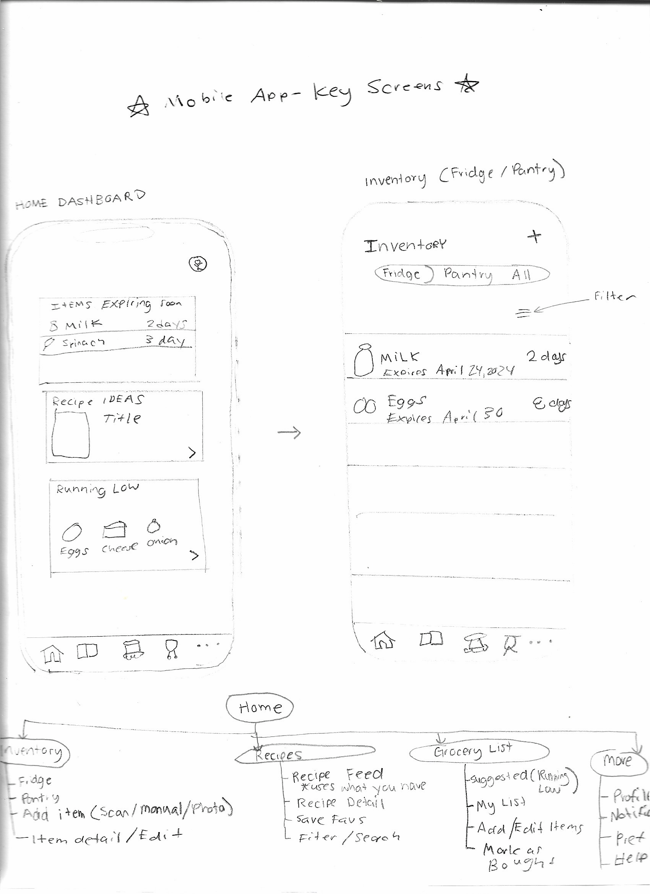
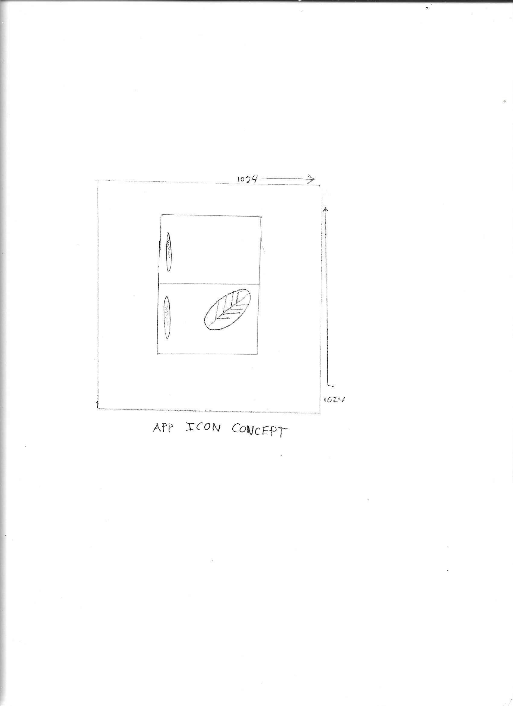

A fridge and pantry tracker that warns you before food expires, suggests what to cook, and builds your grocery list for you.
I started with a product idea and a set of lo-fi wireframes: a mobile app for managing what's in the kitchen, paired with a small display that sits on the fridge. Then I built the mobile app natively for iPhone in Xcode with SwiftUI, learning Swift as I went. The app tracks fridge and pantry items, reminds you before food expires, suggests a recipe that uses what you have, and builds your grocery list automatically.
<

Things expire at the back of the fridge, and staples run out without anyone noticing. At the store you don't remember what's already at home. And when it's time to cook, it's hard to think of a meal that uses what you have.
GroceryApp tracks fridge and pantry items with their expiry dates, reminds you before food goes bad, suggests a meal that uses up what's expiring, and turns running-low items into a grocery list that restocks your inventory when you shop.
The home dashboard shows what's expiring and what's running low, with the most urgent items in red and the next-most urgent in orange.
By surfacing expiry dates on the first screen, users know straight away which ingredients to use up before they spoil.
Expiring soon, a recipe idea that uses up expiring food, and a quick list of items running low.
Fridge / Pantry / All filters, sorted soonest-expiring first, with swipe to delete.
A quick form with emoji picker, units, expiry date and a "running low" threshold. Edits save as you type.
Scan a package to fill in its name, emoji and whether it goes in the fridge or pantry.
A notification at 9 AM, a set number of days before each item expires. Adjustable for every item.
Suggests running-low items with amounts to buy. Checking one off restocks the inventory.
The part I'm proudest of is how the screens connect. Each item can have a "running low" level. When the quantity drops to that level, the item appears on the dashboard and is suggested on the grocery list with an amount to buy. Checking it off at the store adds that amount back to the inventory, and it drops off the list.
I built the app one screen at a time, running it after every step and committing each working version to Git.
Mapped the fridge display, the mobile app and a cloud sync layer, then wireframed eight screens and the navigation.
Started a React Native (Expo) project in VS Code, then switched to Xcode and SwiftUI to build a native iPhone app and learn Apple's tools.
Built the dashboard cards from small reusable components, with mock data, and kept the expiry logic separate from the UI.
Added the five-tab bar from the wireframe, and made "See all" jump straight to Inventory.
A filterable list, swipe to delete, and an add form, all reading from one shared source of data.
Moved from in-memory data to SwiftData so items are saved between launches.
Editing with auto-save, then the grocery list and the restock loop.
Expiry reminders that update when a date changes and cancel when an item is deleted.
@Model
final class Item {
var name: String
var location: StorageLocation // fridge or pantry
var quantity: Double
var expiresOn: Date? // pantry staples may not have one
var lowThreshold: Double? // at or below this = "running low"
var remindDaysBefore: Int = 2
}I created and assembled every file in Xcode myself, debugged the build errors, and tested each feature on the simulator and on my iPhone.
The wall-mounted screen from the original concept, synced with the phone through iCloud.
One shared inventory and grocery list for everyone at home.